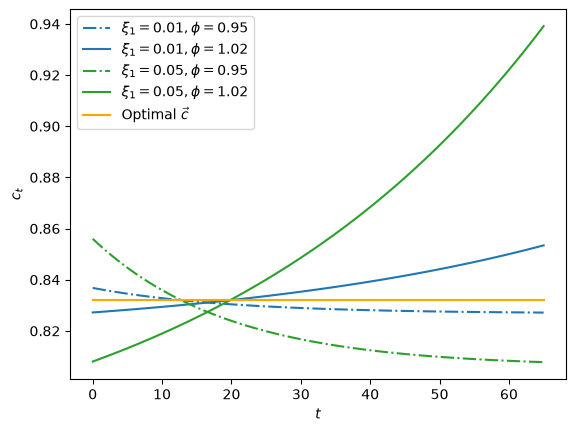
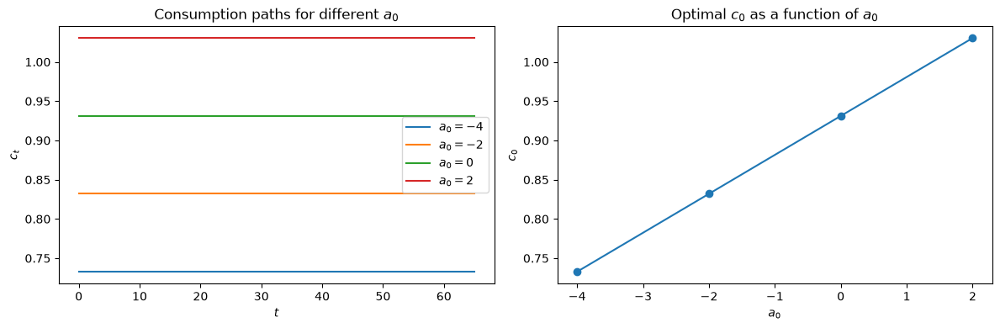
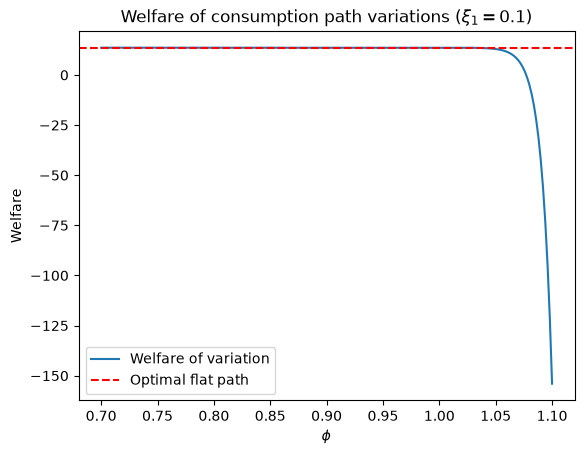

12. Consumption Smoothing#
12.1. Overview#
In this lecture, we’ll study a famous model of the “consumption function” that Milton Friedman [Friedman, 1956] and Robert Hall [Hall, 1978]) proposed to fit some empirical data patterns that the original Keynesian consumption function described in this QuantEcon lecture geometric series missed.
We’ll study what is often called the “consumption-smoothing model.”
We’ll use matrix multiplication and matrix inversion, the same tools that we used in this QuantEcon lecture present values.
Formulas presented in present value formulas are at the core of the consumption-smoothing model because we shall use them to define a consumer’s “human wealth”.
The key idea that inspired Milton Friedman was that a person’s non-financial income, i.e., his or her wages from working, can be viewed as a dividend stream from ‘‘human capital’’ and that standard asset-pricing formulas can be applied to compute ‘‘non-financial wealth’’ that capitalizes that earnings stream.
Note
As we’ll see in this QuantEcon lecture equalizing difference model, Milton Friedman had used this idea in his PhD thesis at Columbia University, eventually published as [Kuznets and Friedman, 1939] and [Friedman and Kuznets, 1945].
It will take a while for a “present value” or asset price explicitly to appear in this lecture, but when it does it will be a key actor.
12.2. Analysis#
As usual, we’ll start by importing some Python modules.
import numpy as np
import matplotlib.pyplot as plt
from collections import namedtuple
The model describes a consumer who lives from time
We usually think of the non-financial income stream as coming from the person’s earnings from supplying labor.
The model takes a non-financial income stream as an input, regarding it as “exogenous” in the sense that it is determined outside the model.
The consumer faces a gross interest rate of
Let
The sequence of financial wealth
We require it to satisfy two boundary conditions:
it must equal an exogenous value
it must equal or exceed an exogenous value
The terminal condition
(We’ll soon see that a utility maximizing consumer won’t want to die
leaving positive assets, so she’ll arrange her affairs to make
The consumer faces a sequence of budget constraints that constrains sequences
Equations (12.1) constitute
Given a sequence
Our model has the following logical flow.
start with an exogenous non-financial income sequence
use the system of equations (12.1) for
verify that
If it does, declare that the candidate path is budget feasible.
if the candidate consumption path is not budget feasible, propose a less greedy consumption path and start over
Below, we’ll describe how to execute these steps using linear algebra – matrix inversion and multiplication.
The above procedure seems like a sensible way to find “budget-feasible” consumption paths
In general, there are many budget feasible consumption paths
Among all budget-feasible consumption paths, which one should a consumer want?
To answer this question, we shall eventually evaluate alternative budget feasible consumption paths
where
When
Indeed, we shall see that when
By smoother we mean as close as possible to being constant over time.
The preference for smooth consumption paths that is built into the model gives it the name “consumption-smoothing model”.
We’ll postpone verifying our claim that a constant consumption path is optimal when
Before doing that, let’s dive in and do some calculations that will help us understand how the model works in practice when we provide the consumer with some different streams on non-financial income.
Here we use default parameters
We create a Python namedtuple to store these parameters with default values.
ConsumptionSmoothing = namedtuple("ConsumptionSmoothing",
["R", "g1", "g2", "β_seq", "T"])
def create_consumption_smoothing_model(R=1.05, g1=1, g2=1/2, T=65):
β = 1/R
β_seq = np.array([β**i for i in range(T+1)])
return ConsumptionSmoothing(R, g1, g2,
β_seq, T)
12.3. Friedman-Hall consumption-smoothing model#
A key object is what Milton Friedman called “human” or “non-financial” wealth at time
Human or non-financial wealth at time
Formally it very much resembles the asset price that we computed in this QuantEcon lecture present values.
Indeed, this is why Milton Friedman called it “human capital”.
By iterating on equation (12.1) and imposing the terminal condition
it is possible to convert a sequence of budget constraints (12.1) into a single intertemporal constraint
Equation (12.3) says that the present value of the consumption stream equals the sum of financial and non-financial (or human) wealth.
Robert Hall [Hall, 1978] showed that when
(Later we’ll present a “variational argument” that shows that this constant path maximizes
criterion (12.2) when
In this case, we can use the intertemporal budget constraint to write
Equation (12.4) is the consumption-smoothing model in a nutshell.
12.4. Mechanics of consumption-smoothing model#
As promised, we’ll provide step-by-step instructions on how to use linear algebra, readily implemented in Python, to compute all objects in play in the consumption-smoothing model.
In the calculations below, we’ll set default values of
12.4.1. Step 1#
For a
12.4.2. Step 2#
Compute an time
12.4.3. Step 3#
Use the system of equations (12.1) for
To do this, we translate that system of difference equations into a single matrix equation as follows:
Multiply both sides by the inverse of the matrix on the left side to compute
Because we have built into our calculations that the consumer leaves
the model with exactly zero assets, just barely satisfying the
terminal condition that
Let’s verify this with Python code.
First we implement the model with compute_optimal
def compute_optimal(model, a0, y_seq):
R, T = model.R, model.T
# non-financial wealth
h0 = model.β_seq @ y_seq # since β = 1/R
# c0
c0 = (1 - 1/R) / (1 - (1/R)**(T+1)) * (a0 + h0)
c_seq = c0*np.ones(T+1)
# verify
A = np.diag(-R*np.ones(T), k=-1) + np.eye(T+1)
b = y_seq - c_seq
b[0] = b[0] + a0
a_seq = np.linalg.inv(A) @ (R * b)
a_seq = np.concatenate([[a0], a_seq])
return c_seq, a_seq, h0
We use an example where the consumer inherits
This can be interpreted as student debt with which the consumer begins his or her working life.
The non-financial process
The drop in non-financial income late in life reflects retirement from work.
# Financial wealth
a0 = -2 # such as "student debt"
# non-financial Income process
y_seq = np.concatenate([np.ones(46), np.zeros(20)])
cs_model = create_consumption_smoothing_model()
c_seq, a_seq, h0 = compute_optimal(cs_model, a0, y_seq)
print('check a_T+1=0:',
np.abs(a_seq[-1] - 0) <= 1e-8)
check a_T+1=0: True
The graphs below show paths of non-financial income, consumption, and financial assets.
# Sequence length
T = cs_model.T
fig, axes = plt.subplots(1, 2, figsize=(12,5))
axes[0].plot(range(T+1), y_seq, label='non-financial income', lw=2)
axes[0].plot(range(T+1), c_seq, label='consumption', lw=2)
axes[1].plot(range(T+2), a_seq, label='financial wealth', color='green', lw=2)
axes[0].set_ylabel(r'$c_t,y_t$')
axes[1].set_ylabel(r'$a_t$')
for ax in axes:
ax.plot(range(T+2), np.zeros(T+2), '--', lw=1, color='black')
ax.legend()
ax.set_xlabel(r'$t$')
plt.show()
{kind=link}
Note that
We can evaluate welfare criterion (12.2)
def welfare(model, c_seq):
β_seq, g1, g2 = model.β_seq, model.g1, model.g2
u_seq = g1 * c_seq - g2/2 * c_seq**2
return β_seq @ u_seq
print('Welfare:', welfare(cs_model, c_seq))
Welfare: 13.285050962183433
12.4.4. Experiments#
In this section we describe how a consumption sequence would optimally respond to different sequences sequences of non-financial income.
First we create a function plot_cs that generates graphs for different instances of the consumption-smoothing model cs_model.
This will help us avoid rewriting code to plot outcomes for different non-financial income sequences.
def plot_cs(model, # consumption-smoothing model
a0, # initial financial wealth
y_seq # non-financial income process
):
# Compute optimal consumption
c_seq, a_seq, h0 = compute_optimal(model, a0, y_seq)
# Sequence length
T = model.T
fig, axes = plt.subplots(1, 2, figsize=(12,5))
axes[0].plot(range(T+1), y_seq, label='non-financial income', lw=2)
axes[0].plot(range(T+1), c_seq, label='consumption', lw=2)
axes[1].plot(range(T+2), a_seq, label='financial wealth', color='green', lw=2)
axes[0].set_ylabel(r'$c_t,y_t$')
axes[1].set_ylabel(r'$a_t$')
for ax in axes:
ax.plot(range(T+2), np.zeros(T+2), '--', lw=1, color='black')
ax.legend()
ax.set_xlabel(r'$t$')
plt.show()
In the experiments below, please study how consumption and financial asset sequences vary across different sequences for non-financial income.
12.4.4.1. Experiment 1: one-time gain/loss#
We first assume a one-time windfall of
We’ll make
# Windfall W_0 = 2.5
y_seq_pos = np.concatenate([np.ones(21), np.array([2.5]), np.ones(24), np.zeros(20)])
plot_cs(cs_model, a0, y_seq_pos)
{kind=link}
# Disaster W_0 = -2.5
y_seq_neg = np.concatenate([np.ones(21), np.array([-2.5]), np.ones(24), np.zeros(20)])
plot_cs(cs_model, a0, y_seq_neg)
{kind=link}
12.4.4.2. Experiment 2: permanent wage gain/loss#
Now we assume a permanent increase in income of
Again we can study positive and negative cases
# Positive permanent income change W = 0.5 when t >= 21
y_seq_pos = np.concatenate(
[np.ones(21), 1.5*np.ones(25), np.zeros(20)])
plot_cs(cs_model, a0, y_seq_pos)
{kind=link}
# Negative permanent income change W = -0.5 when t >= 21
y_seq_neg = np.concatenate(
[np.ones(21), .5*np.ones(25), np.zeros(20)])
plot_cs(cs_model, a0, y_seq_neg)
{kind=link}
12.4.4.3. Experiment 3: a late starter#
Now we simulate a
# Late starter
y_seq_late = np.concatenate(
[np.ones(46), 2*np.ones(20)])
plot_cs(cs_model, a0, y_seq_late)
{kind=link}
12.4.4.4. Experiment 4: geometric earner#
Now we simulate a geometric
We first experiment with
# Geometric earner parameters where λ = 1.05
λ = 1.05
y_0 = 1
t_max = 46
# Generate geometric y sequence
geo_seq = λ ** np.arange(t_max) * y_0
y_seq_geo = np.concatenate(
[geo_seq, np.zeros(20)])
plot_cs(cs_model, a0, y_seq_geo)
{kind=link}
Now we show the behavior when
λ = 0.95
geo_seq = λ ** np.arange(t_max) * y_0
y_seq_geo = np.concatenate(
[geo_seq, np.zeros(20)])
plot_cs(cs_model, a0, y_seq_geo)
{kind=link}
What happens when
λ = -0.95
geo_seq = λ ** np.arange(t_max) * y_0 + 1
y_seq_geo = np.concatenate(
[geo_seq, np.ones(20)])
plot_cs(cs_model, a0, y_seq_geo)
{kind=link}
12.4.5. Feasible consumption variations#
We promised to justify our claim that when
Let’s do that now.
The approach we’ll take is an elementary example of the “calculus of variations”.
Let’s dive in and see what the key idea is.
To explore what types of consumption paths are welfare-improving, we shall create an admissible consumption path variation sequence
This equation says that the present value of admissible consumption path variations must be zero.
So once again, we encounter a formula for the present value of an “asset”:
we require that the present value of consumption path variations be zero.
Here we’ll restrict ourselves to a two-parameter class of admissible consumption path variations of the form
We say two and not three-parameter class because
Let’s compute that function.
We require
which implies that
which implies that
which implies that
This is our formula for
Key Idea: if
Given
Now let’s compute and plot consumption path variations
def compute_variation(model, ξ1, ϕ, a0, y_seq, verbose=1):
R, T, β_seq = model.R, model.T, model.β_seq
growth = ϕ / R
if np.isclose(growth, 1):
pv_sum = T + 1
else:
pv_sum = (1 - growth**(T+1)) / (1 - growth)
annuity = (1 - 1/R) / (1 - (1/R)**(T+1))
ξ0 = ξ1 * annuity * pv_sum
v_seq = np.array([(ξ1*ϕ**t - ξ0) for t in range(T+1)])
if verbose == 1:
print('check feasible:', np.isclose(β_seq @ v_seq, 0)) # since β = 1/R
c_opt, _, _ = compute_optimal(model, a0, y_seq)
cvar_seq = c_opt + v_seq
return cvar_seq
We visualize variations for
fig, ax = plt.subplots()
ξ1s = [.01, .05]
ϕs= [.95, 1.02]
colors = {.01: 'tab:blue', .05: 'tab:green'}
params = np.array(np.meshgrid(ξ1s, ϕs)).T.reshape(-1, 2)
for i, param in enumerate(params):
ξ1, ϕ = param
print(f'variation {i}: ξ1={ξ1}, ϕ={ϕ}')
cvar_seq = compute_variation(model=cs_model,
ξ1=ξ1, ϕ=ϕ, a0=a0,
y_seq=y_seq)
print(f'welfare={welfare(cs_model, cvar_seq)}')
print('-'*64)
if i % 2 == 0:
ls = '-.'
else:
ls = '-'
ax.plot(range(T+1), cvar_seq, ls=ls,
color=colors[ξ1],
label=fr'$\xi_1 = {ξ1}, \phi = {ϕ}$')
plt.plot(range(T+1), c_seq,
color='orange', label=r'Optimal $\vec{c}$ ')
plt.legend()
plt.xlabel(r'$t$')
plt.ylabel(r'$c_t$')
plt.show()
variation 0: ξ1=0.01, ϕ=0.95
check feasible: True
welfare=13.285009346064836
----------------------------------------------------------------
variation 1: ξ1=0.01, ϕ=1.02
check feasible: True
welfare=13.28491163101544
----------------------------------------------------------------
variation 2: ξ1=0.05, ϕ=0.95
check feasible: True
welfare=13.284010559218512
----------------------------------------------------------------
variation 3: ξ1=0.05, ϕ=1.02
check feasible: True
welfare=13.28156768298361
----------------------------------------------------------------
{kind=link}

We can even use the Python np.gradient command to compute derivatives of welfare with respect to our two parameters.
(We are actually discovering the key idea beneath the calculus of variations.)
First, we define the welfare with respect to
def welfare_rel(ξ1, ϕ):
"""
Compute welfare of variation sequence
for given ϕ, ξ1 with a consumption-smoothing model
"""
cvar_seq = compute_variation(cs_model, ξ1=ξ1,
ϕ=ϕ, a0=a0,
y_seq=y_seq,
verbose=0)
return welfare(cs_model, cvar_seq)
# Vectorize the function to allow array input
welfare_vec = np.vectorize(welfare_rel)
Then we can visualize the relationship between welfare and
ξ1_arr = np.linspace(-0.5, 0.5, 20)
plt.plot(ξ1_arr, welfare_vec(ξ1_arr, 1.02))
plt.ylabel('welfare')
plt.xlabel(r'$\xi_1$')
plt.show()
welfare_grad = welfare_vec(ξ1_arr, 1.02)
welfare_grad = np.gradient(welfare_grad)
plt.plot(ξ1_arr, welfare_grad)
plt.ylabel('derivative of welfare')
plt.xlabel(r'$\xi_1$')
plt.show()
{kind=link}
{kind=link}
The same can be done on
ϕ_arr = np.linspace(-0.5, 0.5, 20)
plt.plot(ξ1_arr, welfare_vec(0.05, ϕ_arr))
plt.ylabel('welfare')
plt.xlabel(r'$\phi$')
plt.show()
welfare_grad = welfare_vec(0.05, ϕ_arr)
welfare_grad = np.gradient(welfare_grad)
plt.plot(ξ1_arr, welfare_grad)
plt.ylabel('derivative of welfare')
plt.xlabel(r'$\phi$')
plt.show()
{kind=link}
{kind=link}
12.5. Wrapping up the consumption-smoothing model#
The consumption-smoothing model of Milton Friedman [Friedman, 1956] and Robert Hall [Hall, 1978]) is a cornerstone of modern economics that has important ramifications for the size of the Keynesian “fiscal policy multiplier” that we described in QuantEcon lecture geometric series.
The consumption-smoothingmodel lowers the government expenditure multiplier relative to one implied by the original Keynesian consumption function presented in geometric series.
Friedman’s work opened the door to an enlightening literature on the aggregate consumption function and associated government expenditure multipliers that remains active today.
12.6. Appendix: solving difference equations with linear algebra#
In the preceding sections we have used linear algebra to solve a consumption-smoothing model.
The same tools from linear algebra – matrix multiplication and matrix inversion – can be used to study many other dynamic models.
We’ll conclude this lecture by giving a couple of examples.
We’ll describe a useful way of representing and “solving” linear difference equations.
To generate some
12.6.1. First-order difference equation#
We’ll start with a first-order linear difference equation for
where
We can cast this set of
Multiplying both sides of (12.5) by the inverse of the matrix on the left provides the solution
Exercise 12.1
To get (12.6), we multiplied both sides of (12.5) by the inverse of the matrix
is the inverse of
Solution
λ = 0.9
T = 6
# Matrix A: ones on diagonal, -λ on the first subdiagonal
A = np.eye(T) - λ * np.diag(np.ones(T-1), k=-1)
# Purported inverse: lower triangular, A_inv[i,j] = λ^(i-j) for i >= j
A_inv = np.zeros((T, T))
for i in range(T):
for j in range(i + 1):
A_inv[i, j] = λ**(i - j)
# Verify A @ A_inv = I
print("A @ A_inv (should be identity):")
print(np.round(A @ A_inv, 10))
print("Is identity:", np.allclose(A @ A_inv, np.eye(T)))
A @ A_inv (should be identity):
[[ 1. 0. 0. 0. 0. 0.]
[ 0. 1. 0. 0. 0. 0.]
[ 0. 0. 1. 0. 0. 0.]
[ 0. 0. 0. 1. 0. 0.]
[-0. 0. 0. 0. 1. 0.]
[ 0. -0. 0. 0. 0. 1.]]
Is identity: True
12.6.2. Second-order difference equation#
A second-order linear difference equation for
where now
As we did with the first-order difference equation, we can cast this set of
Multiplying both sides by inverse of the matrix on the left again provides the solution.
Exercise 12.2
As an exercise, we ask you to represent and solve a third-order linear difference equation. How many initial conditions must you specify?
Solution
A third-order linear difference equation is
Three initial conditions are required:
The matrix representation stacks the
λ1, λ2, λ3 = 0.8, -0.3, 0.1
y0, y_m1, y_m2 = 1.0, 0.5, 0.25
T = 15
# Build the 3rd-order coefficient matrix
A3 = np.eye(T)
for i in range(T):
if i >= 1:
A3[i, i-1] = -λ1
if i >= 2:
A3[i, i-2] = -λ2
if i >= 3:
A3[i, i-3] = -λ3
# Right-hand side
b = np.zeros(T)
b[0] = λ1 * y0 + λ2 * y_m1 + λ3 * y_m2
b[1] = λ2 * y0 + λ3 * y_m1
b[2] = λ3 * y0
# Solve
y = np.linalg.solve(A3, b)
y_full = np.concatenate([[y_m2, y_m1, y0], y])
fig, ax = plt.subplots()
ax.plot(range(-2, T+1), y_full, 'o-')
ax.axhline(0, linestyle='--', lw=1)
ax.set_xlabel('$t$')
ax.set_ylabel('$y_t$')
ax.set_title('Third-order linear difference equation')
plt.show()
{kind=link}
12.7. Exercises#
Exercise 12.3
Using compute_optimal, compute the optimal constant consumption level
and the default model parameters.
a. Plot all four consumption paths on a single graph and describe their shapes relative to one another.
b. Plot
Solution
cs_model = create_consumption_smoothing_model()
T = cs_model.T
y_seq = np.concatenate([np.ones(46), np.zeros(20)])
a0_vals = [-4, -2, 0, 2]
c0_vals = []
fig, axes = plt.subplots(1, 2, figsize=(12, 4))
for a0 in a0_vals:
c_seq, a_seq, h0 = compute_optimal(cs_model, a0, y_seq)
c0_vals.append(c_seq[0])
axes[0].plot(range(T+1), c_seq, label=f'$a_0 = {a0}$')
axes[0].set_xlabel('$t$')
axes[0].set_ylabel('$c_t$')
axes[0].set_title('Consumption paths for different $a_0$')
axes[0].legend()
axes[1].plot(a0_vals, c0_vals, 'o-')
axes[1].set_xlabel('$a_0$')
axes[1].set_ylabel('$c_0$')
axes[1].set_title('Optimal $c_0$ as a function of $a_0$')
plt.tight_layout()
plt.show()
# Verify slope = annuity factor
R = cs_model.R
slope = (c0_vals[-1] - c0_vals[0]) / (a0_vals[-1] - a0_vals[0])
annuity = (1 - 1/R) / (1 - (1/R)**(T+1))
print(f'Numerical slope of c0 w.r.t. a0: {slope:.8f}')
print(f'Annuity factor (1 - R**(-1))/(1 - R**(-(T+1))): {annuity:.8f}')
print(f'Match: {np.isclose(slope, annuity)}')
{kind=link}

Numerical slope of c0 w.r.t. a0: 0.04960054
Annuity factor (1 - R**(-1))/(1 - R**(-(T+1))): 0.04960054
Match: True
The four paths are parallel horizontal lines, all flat but shifted vertically.
The slope of
Exercise 12.4
The variational argument in this lecture says that the constant consumption path maximizes welfare (12.2) among all budget-feasible paths.
Using compute_variation with
a. Compute welfare for the optimal flat path and for variations with
Print the results in a table.
b. Plot welfare as a function of
Solution
a0 = -2
y_seq_pos = np.concatenate(
[np.ones(21), np.array([2.5]), np.ones(24), np.zeros(20)])
c_opt, _, _ = compute_optimal(cs_model, a0, y_seq_pos)
w_opt = welfare(cs_model, c_opt)
print(f'Optimal (flat) welfare: {w_opt:.6f}\n')
ϕ_vals = [0.7, 0.9, 0.98, 1.02, 1.1]
print(f'{"ϕ":>6} | {"welfare":>12} | {"vs. optimal":>14}')
print('-' * 38)
for ϕ in ϕ_vals:
cvar = compute_variation(cs_model, ξ1=0.1, ϕ=ϕ, a0=a0,
y_seq=y_seq_pos, verbose=0)
w = welfare(cs_model, cvar)
print(f'{ϕ:>6.2f} | {w:>12.6f} | {w - w_opt:>+14.6f}')
# Fine grid
ϕ_grid = np.linspace(0.7, 1.1, 200)
w_grid = np.array([
welfare(cs_model,
compute_variation(cs_model, ξ1=0.1, ϕ=ϕ, a0=a0,
y_seq=y_seq_pos, verbose=0))
for ϕ in ϕ_grid
])
fig, ax = plt.subplots()
ax.plot(ϕ_grid, w_grid, label='Welfare of variation')
ax.axhline(w_opt, linestyle='--', color='red', label='Optimal flat path')
ax.set_xlabel(r'$\phi$')
ax.set_ylabel('Welfare')
ax.set_title('Welfare of consumption path variations ($\\xi_1 = 0.1$)')
ax.legend()
plt.show()
Optimal (flat) welfare: 13.595889
ϕ | welfare | vs. optimal
--------------------------------------
0.70 | 13.592318 | -0.003571
0.90 | 13.591027 | -0.004862
0.98 | 13.593989 | -0.001900
1.02 | 13.581956 | -0.013933
1.10 | -153.996624 | -167.592513
{kind=link}

Every non-zero variation in the plotted family delivers strictly lower welfare than the flat path marked by the horizontal dashed line.
The wider interval
This numerically confirms the variational principle that the constant consumption path is the global welfare maximizer when